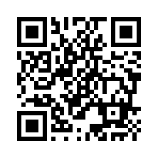

수업 설계 의도
역사 사건을 다룬 매체는 일부 사실을 강조하거나 생략하고, 사건을 특정한 관점에서 해석하기도 합니다. 학생은 4·19 혁명과 5·18 민주화운동 관련 보도에서 사실, 해석, 왜곡을 구분합니다.
왜곡된 내용이 어떤 근거로 바로잡힐 수 있는지 확인하고, 정정 기사나 팩트체크 콘텐츠로 근거를 설명합니다. 모둠별 상호 검토를 통해 역사 정보를 책임 있게 읽고 공유하는 기준을 만듭니다.
수업 개요
- 학습 주제
- 왜곡된 역사 정보를 어떻게 확인하고 바로잡을까?
- 대상·차시
- 중학교 3학년~고등학교 1학년 · 3차시
- 관련 단원
- 근·현대 사회로의 전환, 대한민국의 발전
학습 목표
- 역사 속 왜곡 보도에서 확인할 수 있는 사실과 왜곡된 주장을 구별할 수 있다.
- 왜곡 정보를 사료와 비교하여 근거를 갖춘 정정 자료로 고쳐 쓸 수 있다.
- 다양한 매체의 역사 정보를 검토하고 신뢰성을 판단할 기준을 세울 수 있다.
성취기준 2개 보기
- 9역13-03 한국의 민주화 과정에서 나타난 성과와 과제를 탐구한다.
- 10한사2-02-03 4·19 혁명에서 6월 민주 항쟁에 이르는 민주화 과정을 탐구한다.
디지털 미디어 리터러시 역량
정보 분석·평가 · AI·디지털 콘텐츠 생성 · 윤리적 활용
수업 구성도
왜곡 기사 분석, 사실 자료와 대조해 정정 콘텐츠 만들기, 근거 중심으로 상호 검토하기의 순서입니다.
1차시 · 도입4·19와 5·18 관련 보도의 사실과 프레임
- 4·19 혁명과 5·18 민주화운동 관련 기사 자료를 읽고 작성 주체와 전달 경로를 확인합니다.
- 기사에서 확인할 수 있는 사실, 해석, 잘못된 정보를 구분합니다.
- 두 기사에서 찾아낸 왜곡 방식과 강조된 표현을 정리합니다.
2차시 · 적용사료를 근거로 정정 콘텐츠 만들기
- 왜곡 기사나 쇼츠 대본에 담긴 주장과 빠뜨린 맥락을 찾습니다.
- 사실 자료를 대조하여 정정이 필요한 부분과 근거를 확인합니다.
- 출처와 정정 이유를 명시한 기사 또는 팩트체크 콘텐츠를 만듭니다.
2차시 활동지 열기
QR 보기

3차시 · 심화정정 근거 공유와 정보 판단 기준 세우기
- 모둠별로 정정 콘텐츠와 판단 근거를 발표합니다.
- 다른 모둠의 자료에서 근거가 뒷받침하는 주장과 추가 확인이 필요한 점을 살핍니다.
- 역사 정보를 읽고 공유할 때 적용할 기준을 함께 정리합니다.
3차시 활동지 열기
QR 보기
다른 교과 적용
- 국어
- 기사 속 사실과 의견을 구별하고 잘못된 표현을 근거와 함께 고칩니다.
- 사회
- 언론 보도가 시민의 인식과 여론 형성에 미치는 영향을 토의합니다.
- 정보
- 디지털 콘텐츠에 확인된 사실과 출처를 알기 쉽게 제시합니다.
수업 활용 팁
- 역사적 사건을 이해하는 과정에서 표현과 정보가 왜곡되는 방식에 주목하게 합니다.
- 정정 자료에 어떤 사실 자료를 참고했는지와 정정 근거를 쓰게 합니다.
- 상호 검토는 자료의 정확성과 출처, 설명의 타당성을 살피는 데 초점을 둡니다.